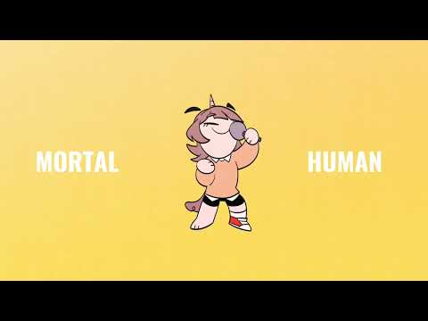
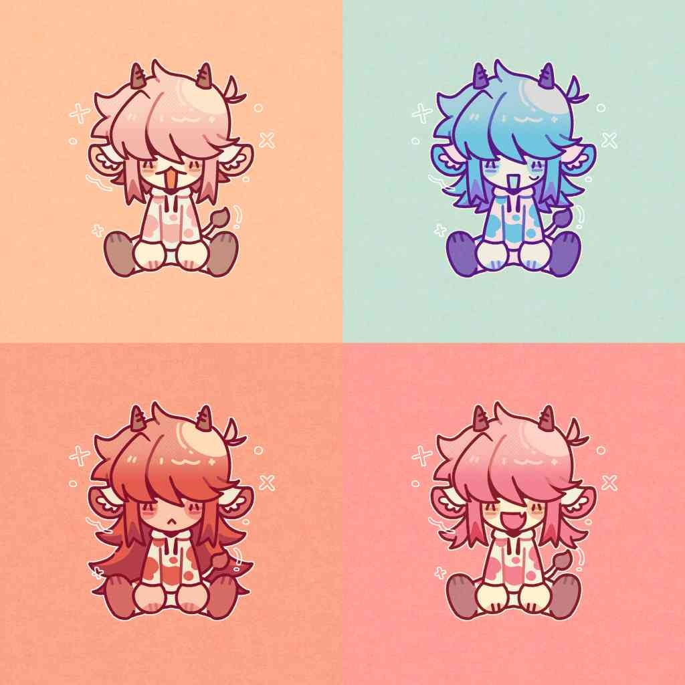
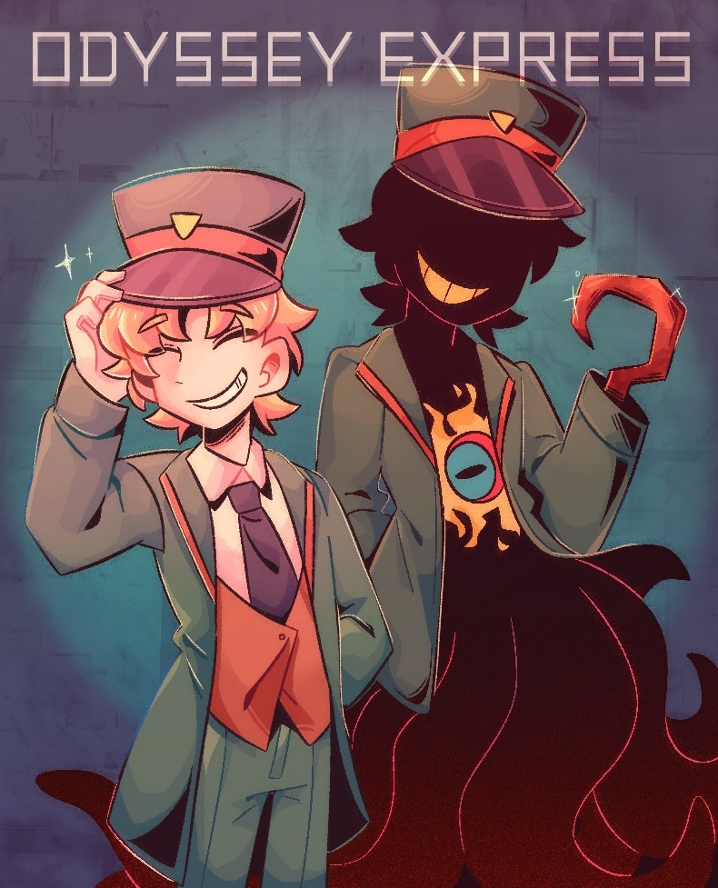

SKILL · 01
畫圖、美編、排版
從角色插畫到視覺美編與版面編排，注重色彩平衡與畫面張力，為作品建立鮮明一致的美術氣質。
小時候的我熱衷於看動畫，腦袋裡就會充滿了很多的想法，想到的畫面都會立刻畫出來，這也是影響我的一個創作習慣。
畫圖這條路，國中技藝班也給我了很大的推力，當時獲得了北區技能競賽的電腦繪圖組第五名，對畫圖更有自信，作為跳板而進去了高職的動畫科。
以創作來說，我更擅長前期的角色設計和故事構想，我也多次在團隊活動中擔任組長和編劇，同時負責監督作品的美術風格。將來希望能從事美術設計相關的工作。
從角色插畫到視覺美編與版面編排，注重色彩平衡與畫面張力，為作品建立鮮明一致的美術氣質。
具備敏銳的觀察力與除錯思維，能在製作流程中快速捕捉細節盲點、提出關鍵問題並確實修正優化。
結合前期故事構想與分鏡節奏規劃，並運用元件動畫讓角色表演與視覺敘事更加生動流暢。
每一份作品，都是一次角色、故事與視覺風格的實驗。點擊卡片可查看詳細介紹與影片。

展示角色動態、場景演出與動畫練習。
展示文字動畫、循環動畫與動態視覺效果。

角色插畫、概念設計與個人繪圖創作。

探索不同的構圖、色彩與視覺表現方式。
喜歡在畫圖與發想劇本時播放獨立樂團的歌曲，讓旋律帶動畫面節奏。

偏愛擁有獨特復古美術、強烈角色塑造與沉浸式劇本的作品。
目前專注於完成多媒體動畫系學業，在專題與團隊合作中累積更紮實的分鏡、編劇與美術統籌經驗。
未來希望能進入美術設計相關領域工作，發揮擅長的角色設定、美編排版與風格監督能力。
將腦海裡累積許久的奇想與角色整理成型，親手寫下並繪製一部屬於自己的完整原創故事。
如果你對我的作品、角色設計或美術合作有興趣，歡迎寄信或透過 Instagram 與我聯繫！